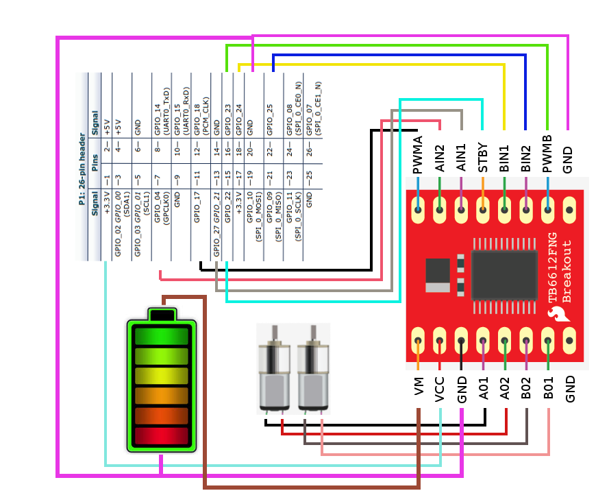
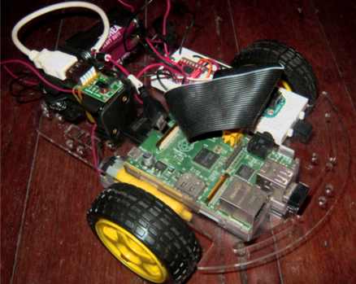

What is Pidro?
Pidro is a remote control car (or we can consider it as a robot car since it was built to do something and can be control remotely) using Raspberry-Pi and a motor controller chips:
Some Basics that you need to know first
TB6612FNG dual motor controller info
Materials that you need
- TB6612FNG dual motor controller
- RaspberryPi
- 2pcs 6V DC motor (tb6612fng can handle up to 15v supply for dc motor please read the datasheet)
- AA Batteries
- battery holder for AA Battery
- Prototyping Board(Bread Board)
- Jumper Wire (Solid)
- Chassis and Wheel (you can buy some or you can custom on your own)
Wiring Details (for GPIO to Motor-controller)
AIN1 => GPIO 27/21
AIN1 => GPIO 27/21
AIN2 => GPIO 4
BIN1 => GPIO 24
BIN2 => GPIO 25
AO1 => DC motor 1
AO2 => DC motor 1
BO1 => DC motor 2
BO2 => DC motor 2
PWMA => 17
PWMB => 23
STBY => 22
VCC => 3.3v of RaspberryPi (pin 1)
VM => power source (for DC motors)
Wiring Lay-out (lame diagram)
Check out the python script for controlling the DC motor
Prototype dry run

Confused or want to ask some questions? you can drop a dm https://twitter.com/chojayr or contact jrlavina07 [at] yahoo [dot] com [dot] ph and I will try to help out.